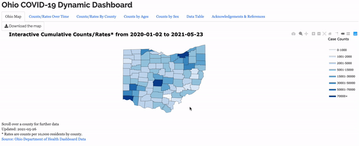
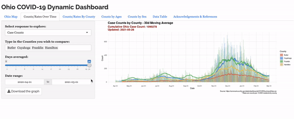
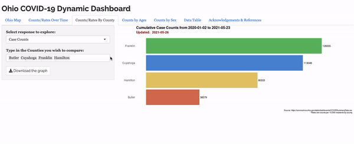

This dashboard showing COVID-19 case statistics might be my favorite project. A team of developers and I, along with our advisor, managed to create
this working beauty in under a week. It started just after 2020 Fall Semester finals when our professor reached out to some of us asking if we wanted
to expand our final project into the dashboard you see here. I had the opportunity to lead the team along with another student, and we met every day during the
development process to iron out all the details. We got feedback from our advisor, the Butler County Health Commisioner, and several others without connections to
statistics in order to make our web application a useful tool for anyone who wanted to use it. The dashboard was published before Christmas 2020 and has had a few
minor updates since then, especially concerning data retrieval since the State of Ohio changed the way they report case metrics. There have been no major changes to
design or features of the dashboard. Miami actually wrote an article about this project and interviewed me for the piece, which you can find here. This article was the
number one article on the College of Engineering and Computing page on Miami's website for a little while.



I learned a lot of the skills required to create a web application such as this one from two classes at Miami: STA 363 and STA 404. 363 is Statistical Modeling, a class that gives an intro to the R language
and RStudio. In 404, Advanced Data Visualization, I obtained most of the skills I needed to create a web app. Both were wonderful classes that made me love the field of statistics and analytics. Shout out to Dr. Fisher and
Dr. Bailer for being quality, engaging, and humorous professors, especially during a pandemic. Anyway, the application is a Shiny app using Plotly and is hosted through one of Miami's web servers. What was great about this project
was the reason for which we built it. It wasn't for a grade; it was for the public. It wasn't for money or fame; it was built to be a free resource for anyone who wanted to see how the data was trending. Our charts and graphs ended up being used by the
Butler County Health Department for their weekly reports and updates about the COVID-19 situation for residents of their county, which was really neat to see.